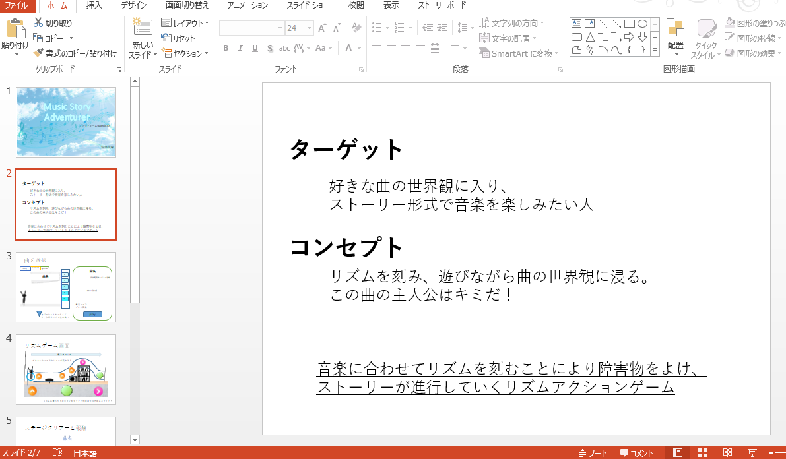

どのお客様にどのような体験をしてもらいたいかを考えて企画を考えます。考えた企画をPowerPointに落とし込み、企画書を作り、発表を行います。

ゲームプログラムの知識を習得するために色々な言語を学びます。
Java
デザイナー職への理解のため、3DとUIのデザインを主に学びました。
主な業務：レジ打ち、品出し、精算、掲示物の作成、クレーム対応
・品切れしそうな商品はないか、製造は作り始めているか、確認や声掛けをして、売り場に商品が常にある状態を保つように心がけました。
主な業務：シフト管理、パート社員の指導、原材料の発注
・パート社員の指導を行うと同時に、コミュニケーションをとることも意識して行いました。
・自分の意見だけではなく、一緒に働くパート社員の意見も聞いて、意見を言いやすい環境作りを意識しました。
理由：周りと円滑にコミュニケーションをとるために、用語とその意味を知る必要があると思うため。
理由：プログラミングへの理解を深めるために、参考書にのっている内容だけではなく、オリジナリティーを実現する必要があると感じたため。